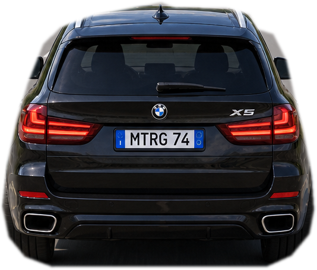

Incolla la chiave API creata su MapTiler Cloud. Rimarrà memorizzata soltanto nel browser di questo telefono. La chiave deve autorizzare il dominio Netlify del navigatore.
Se non inserisci la chiave, rimane disponibile la mappa stradale 2D di emergenza.